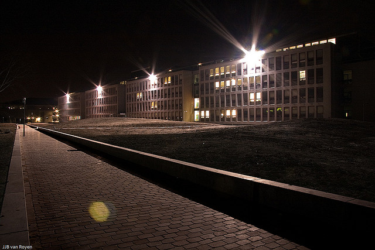

Hello
My name is Felix. I am planning to graduate with my bachelor's degree in Applied Physics at TU Delft this year. Besides natural science, in my spare time I also work with electronics and practice programming.
Projects
- Determining doping type of silicon wafer using Schottky barrier properties
- Prototyping a 3D laser system
- Bachelor thesis: Transport properties of lithium batteries (WIP) 
Applied Sciences building in Delft. Photo by ADD Photography. Flickr/CC